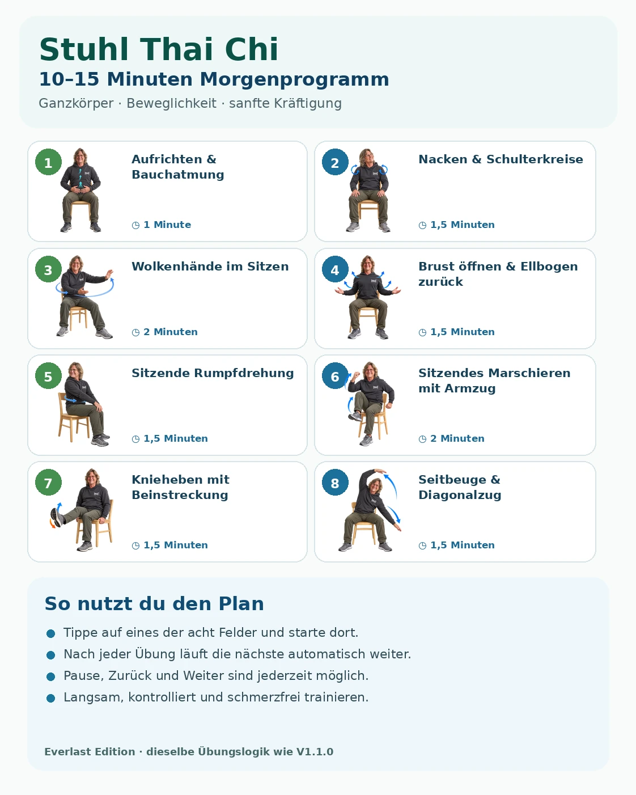
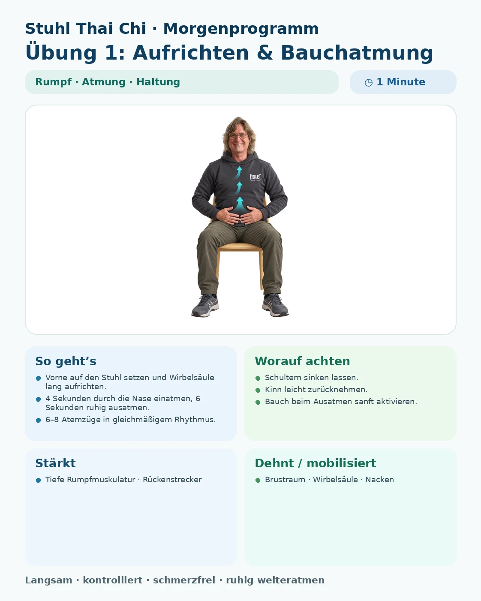

Theraband
Stuhl Thai Chi
Morgenprogramm · V1.2.0 · H.U.Schell Edition · 28 Übungen
Mein Training für Olle
Bereiche wählen, Zeit festlegen und die App stellt Dir automatisch ein passendes Programm zusammen.
Körperbereich / Ziel
10 Minuten · ca. 5 Übungen · Ganzkörper
Das ursprüngliche Morgenprogramm
Die acht Felder im Bild bleiben direkt anklickbar.

MASTER YOGA · NEU
10 Übungen nur für Beweglichkeit
Mit und ohne Stuhl: Wirbelsäule, Schultern, Hüfte, Flanken und Beinrückseiten sanft mobilisieren und dehnen.
🪑 7 Übungen mit Stuhl
🧘 3 Übungen im Stand
∞ Fokus Beweglichkeit
Für kürzere Yoga-Einheiten oben „Master Yoga“ wählen und 5, 10 oder 15 Minuten einstellen.
Alle Übungen
28 Übungen – inklusive 10 neuer Master-Yoga-Übungen ausschließlich für Beweglichkeit.
Automatisch weiter in
02:00

STUHL THAI CHI
Bedienungsanleitung
Beweglich · Stark · Entspannt
Dein kurzer Leitfaden für ein sicheres und einfaches Training.
🚀 Schnellstart
- Auf dem Startbild „Zum Start antippen“.
- Körperbereich auswählen oder Ganzkörper lassen.
- 5, 10 oder 15 Minuten wählen.
- Hilfsmittel aktivieren.
- „Mein Programm starten“ antippen.
🎯 Trainingsbereiche
◎ Ganzkörper↟ Rücken⌁ Schulter & Nacken
↥ Beine & Hüfte∞ Beweglichkeit♥ Aktivierung🧘 Master Yoga
🧘 Master Yoga
10 zusätzliche Übungen dienen ausschließlich der Beweglichkeit. Wähle oben Master Yoga für eine 5-, 10- oder 15-Minuten-Auswahl oder starte das komplette 10er-Programm mit 20 Minuten.
⏱ Automatik
Standardmäßig läuft jede Übung 2 Minuten. Bei 5-/10-/15-Minuten-Programmen wird die letzte Übung bei Bedarf automatisch verkürzt.
🧰 Hilfsmittel
Du kannst Programme ohne Hilfsmittel oder mit Theraband, leichten Hanteln und weiteren einfachen Varianten zusammenstellen.
▶ Während des Trainings
Zurück · Pause/Weiter · Weiter · Vollbild. Der Countdown zeigt dir, wann die nächste Übung automatisch startet.
🪑 Klassisches 8er-Programm
Die acht Felder im Übersichtsbild sind direkt anklickbar. Du kannst eine einzelne Übung auswählen oder das komplette klassische Programm starten.
✅ Sicher trainieren
- Stabilen Stuhl ohne Rollen verwenden.
- Bei stehenden Yogaübungen den Stuhl bei Bedarf zur Balance nutzen.
- Leichten Widerstand wählen.
- Langsam und schmerzfrei bewegen.
- Bei Schwindel, ungewöhnlicher Atemnot oder Schmerzen abbrechen.
📱 Tipp fürs iPad
In Safari: Teilen → Zum Home-Bildschirm. Danach startet die App wie eine normale Anwendung.
Automatik
Für 5-/10-/15-Minuten-Programme wird die letzte Übung bei Bedarf verkürzt, damit die Gesamtdauer genau passt.
Geschafft!
Das Morgenprogramm ist beendet.